Spider-Man/Deadpool (2016 - 2019)
| Comic Book | Release Date | Cover |
|---|---|---|
| Spider-Man/Deadpool #1 Isn't It Bromantic? Part One |  | |
| Spider-Man/Deadpool #2 Isn't It Bromantic? Part Two | 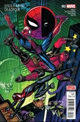 | |
| Spider-Man/Deadpool #3 Isn't It Bromantic? Part Three | 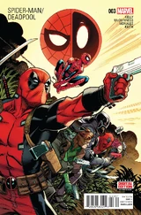 | |
| Spider-Man/Deadpool #4 Isn't It Bromantic? Part Four | 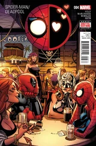 | |
| Spider-Man/Deadpool #5 Isn't It Bromantic? Part Five | 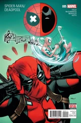 | |
| Spider-Man/Deadpool #6 Number One on the Maul Sheet | 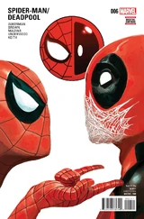 | |
| Spider-Man/Deadpool #7 Convention Chaos or When Cometh the Plutocracy! | 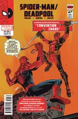 | |
| Spider-Man/Deadpool #8 Isn't It Bromantic? Conclusion | 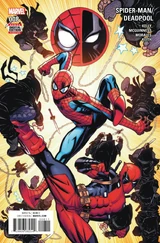 | |
| Spider-Man/Deadpool #9 Itsy Bitsy: Part 1 | 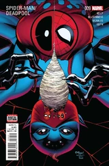 | |
| Spider-Man/Deadpool #10 Itsy Bitsy: Part 2 | 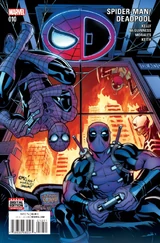 | |
| Spider-Man/Deadpool #11 Change Partners! | 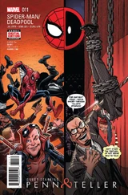 | |
| Spider-Man/Deadpool #12 The Spider-Man/Deadpool Ho-Ho-Holiday Special! | ||
| Spider-Man/Deadpool #13 Itsy Bitsy: Part 3 | 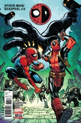 | |
| Spider-Man/Deadpool #14 Itsy Bitsy: Part 4 | 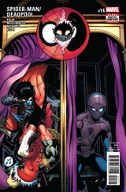 | |
| Spider-Man/Deadpool #15 'Til Death Do Us..., Part Two | 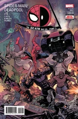 | |
| Spider-Man/Deadpool #16 'Til Death Do Us... (Part 4) | 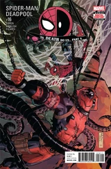 | |
| Spider-Man/Deadpool #17 Itsy Bitsy: Part 5 | 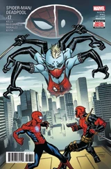 | |
| Spider-Man/Deadpool #18 Itsy Bitsy: Part 6 | 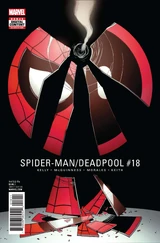 | |
| Spider-Man/Deadpool #19 No Laughing Matter | 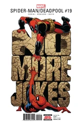 | |
| Spider-Man/Deadpool #20 No Laughing Matter: Part Two | 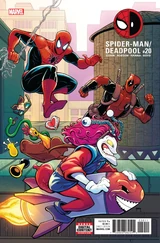 | |
| Spider-Man/Deadpool #21 One Night In Madripoor Makes Spider-Man Humble | 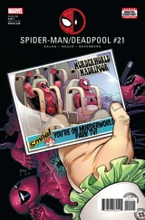 | |
| Spider-Man/Deadpool #22 It's a Murder, Murder, Murder, Murder World | 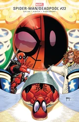 | |
| Spider-Man/Deadpool #23 Arms Race (Part 1) | 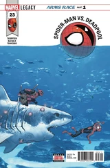 | |
| Spider-Man/Deadpool #24 Arms Race, Part 2 | 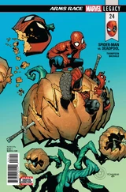 | |
| Spider-Man/Deadpool #25 Arms Race, Part 3 | 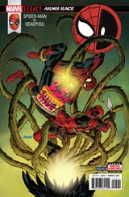 | |
| Spider-Man/Deadpool #26 Oldies, Part 1 | 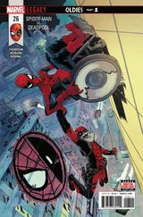 | |
| Spider-Man/Deadpool #27 Area 14, Part 1 | 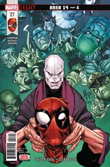 | |
| Spider-Man/Deadpool #28 Area 14, Part 2 | 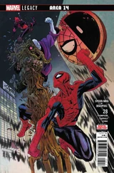 | |
| Spider-Man/Deadpool #29 Oldies, Part 2 | 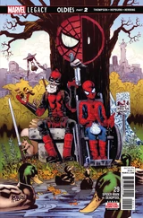 | |
| Spider-Man/Deadpool #30 | 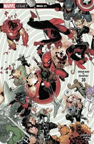 | |
| Spider-Man/Deadpool #31 | 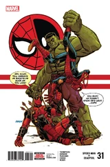 | |
| Spider-Man/Deadpool #32 Oldies, Part 3 | 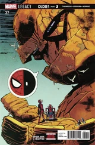 | |
| Spider-Man/Deadpool #33 | 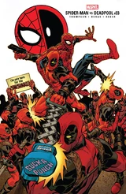 | |
| Spider-Man/Deadpool #34 | 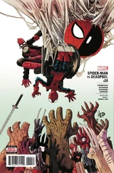 | |
| Spider-Man/Deadpool #35 | 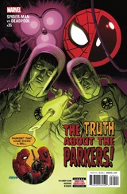 | |
| Spider-Man/Deadpool #36 | 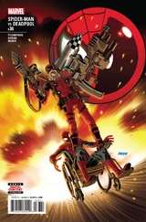 | |
| Spider-Man/Deadpool #37 My Two Dads: Part 1 | 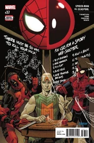 | |
| Spider-Man/Deadpool #38 My Two Dads: Part 2 | 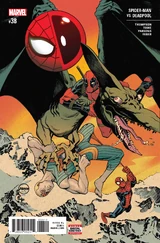 | |
| Spider-Man/Deadpool #39 My Two Dads: Part 3 | 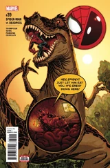 | |
| Spider-Man/Deadpool #40 My Two Dads: Part 4 | 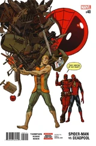 | |
| Spider-Man/Deadpool #41 Road Trip: Part 1 | 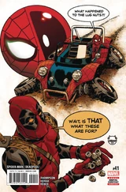 | |
| Spider-Man/Deadpool #42 Road Trip: Part 2 | 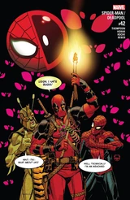 | |
| Spider-Man/Deadpool #43 Road Trip: Part 3 | 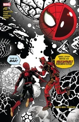 | |
| Spider-Man/Deadpool #44 Road Trip: Part 4 | 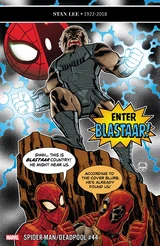 | |
| Spider-Man/Deadpool #45 Road Trip: Part 5 | 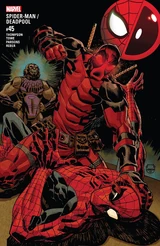 | |
| Spider-Man/Deadpool #46 Road Trip: Part 6 | 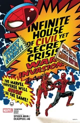 | |
| Spider-Man/Deadpool #47 Road Trip, Part 7 | 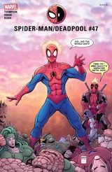 | |
| Spider-Man/Deadpool #48 The Manipulator: Part 1 | 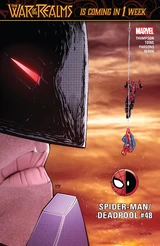 | |
| Spider-Man/Deadpool #49 The Manipulator, Part 2 | 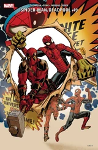 | |
| Spider-Man/Deadpool #50 The Manipulator: Part 3 | 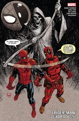 | |
| Spider-Man/Deadpool #1.MU | 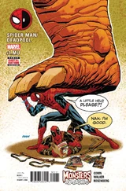 |